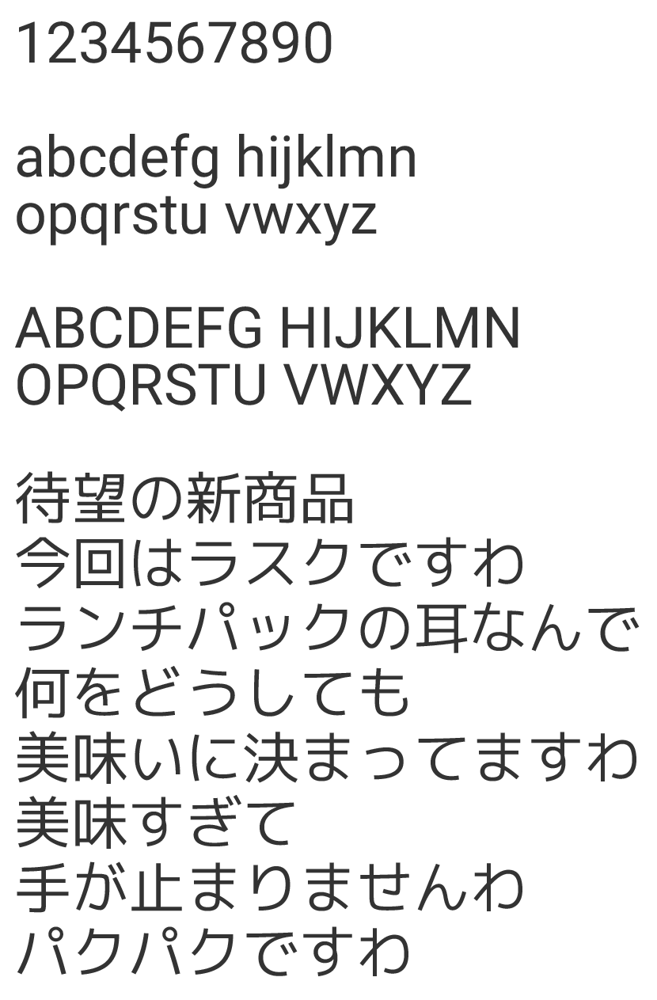

Mejiro
M+ OUTLINE FONTS と Roboto を合成した日本語フォントですわ！
見本

Mejiro は Koruri の派生版 (フォーク) のため、青い小鳥→碧→緑という連想でメジロと名付けています。
Mejiro は Apache License v2.0 でライセンスされています。
そのためライセンスに違反しない限り、以下のような行為が可能です。
再配布する際はライセンスの4. Redistribution. に従ってください。
- 商用利用
- 改変
- 複製
- 公開・再配布
- 改変したものの配布
- アプリケーション等への埋め込み・同梱
- ウェブフォントとしての使用
関連リンク
Android スマートフォン向けに特殊なパッケージを配布しています。
MIUI
Xiaomi / Redmi スマートフォンのグローバル・中国版 MIUI にて、テーマストアから Mejiro をダウンロードして適用できます。地域をインドなどに設定するとテーマ設定が出ます。
mtz ファイル »Mejiro Magisk Module
Magisk にて root 化した Android スマートフォン・タブレットで Mejiro をシステムフォントとして使えるようにする Magisk モジュールです。時計のコロンの文字化けも修正済みです。
ダウンロード (GitHub) »OPLUS
OPPO / realme スマートフォンのグローバル版 ColorOS と OnePlus スマートフォンの OxygenOS 12 以降にて、テーマストアから Mejiro をダウンロードして適用できます。
テーマストア »